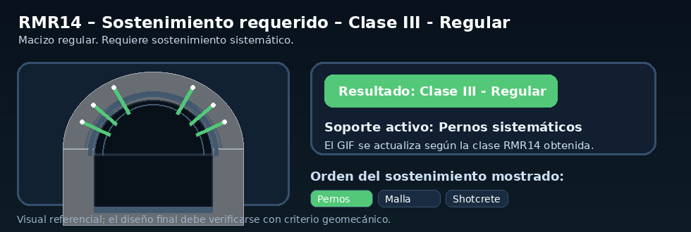

🏆 Clasificación final RMR14
Clase RMR14Clase III - Regular
Rango RMR41 - 60
Calidad★★★★★
Regular
Regular
Macizo de calidad regular. Requiere sostenimiento sistemático.
🛠 GIF de sostenimiento requerido según RMR14
GIF dinámico AUTO

Excavación / avance
Avance y destroza. Avance típico de 1.5 a 3 m.
Pernos de roca
Pernos sistemáticos.
Concreto lanzado
Concreto lanzado y malla.
Cerchas / soporte adicional
Generalmente no necesarias.
El GIF muestra el sostenimiento típico para la clase obtenida.
🔎 Detalle del cálculo actual
Parámetros básicos
RMRb14 = 64. Incluye R1, R2-3, R4, R5 y alterabilidad A.
R1 = 7 porque la resistencia seleccionada es 50 - 100 MPa.
A = 8 por baja alterabilidad.
Correcciones RMR14
RMR₈₉* = 59; Fₑ = 1.00; Fₛ = 1.00; RMR14 = 59.
Método: perforación y voladura tradicional con transporte mediante scoop.